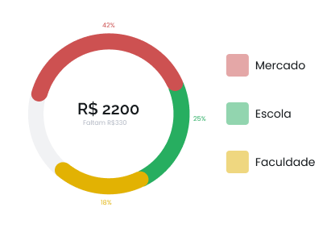
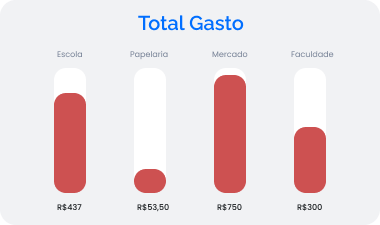
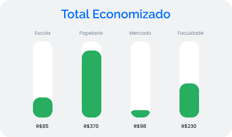
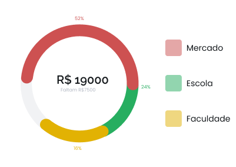
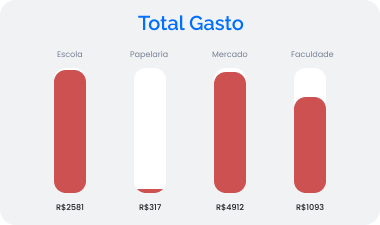
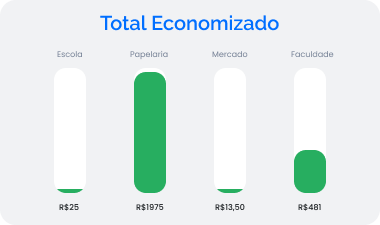

<ion-content [fullscreen]="true">
  <div class="content">
  
  <ion-segment class="header" color="secondary" value="secondary" (ionChange)="segmentChanged($event)">
    <ion-segment-button value="segment">
      <ion-label>Mensal</ion-label>
    </ion-segment-button>
    <ion-segment-button value="secondary">
      <ion-label>Semestral</ion-label>
    </ion-segment-button>
  </ion-segment>

  <!-- <div>
    <button ion-button (click)="toggleDateTime()">Selecionar data</button>
    <ion-datetime *ngIf="showDateTime" minuteValues="0,15,30,45" dayValues="5,10,15,20,25,30"></ion-datetime>
  </div>
   -->

  <div [ngSwitch]="segmentValue" class="todosGrafico">
    <div *ngSwitchCase="'segment'">
      
      
      
      
    </div>
    <div *ngSwitchCase="'secondary'">
      
      
      
      
    </div>
  </div>
</div>

</ion-content>
